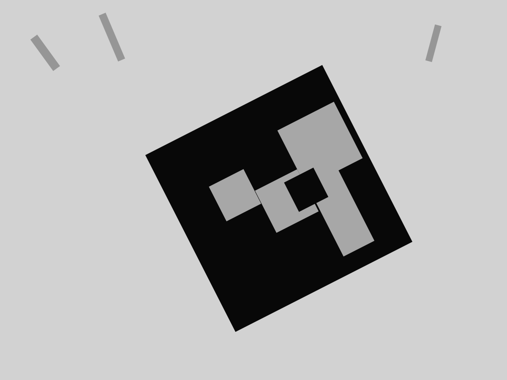

Observation accumulation25 / 67
Cumulative observed frames across the analyzed trace.
simulation-only research prototype
External perception evidence you can inspect, not just trust.

Phase 9 · genuine Gazebo camera evidence
On this seen trace, every projected-visible target frame produced an observation. That is useful evidence. It is not a safety verdict.
frame-level availability
The target was projected visible in 25 of 67 analyzed pose-linked frames. All 25 were observed. No observation appeared in the 42 projected-not-visible frames.
18 ArUco · 7 fixed quad fallback
derived trace views
These visualizations are derived from the same 67 frame states and corrected camera-pose samples already shown in the audited Phase 9 evidence.
Cumulative observed frames across the analyzed trace.
Corrected camera world-pose path from the sampled trace.
Observed-frame concentration grouped across frame-index windows.
geometry
Perfect visible-frame detection did not translate into precise geometry. The estimation residuals remained large enough that the cockpit keeps them beside the detection result instead of hiding them behind a pass badge.
Corrected camera world pose moves with the simulated vehicle; the earlier near-static local-transform provenance failure was rejected.
research timeline
Negative results stay visible. Later evidence never rewrites the frozen earlier result.
Confidence-aware redundant estimation concept established.
Frozen held-out synthetic benchmark: mixed result, 99% success and 1% unsafe.
External-validity stress exposed weak cells under stronger dynamics and faults.
Genuine PX4/Gazebo comparison returned diagnostic_mismatch. Preserved unchanged.
Early camera runs exposed completeness and world-pose provenance defects. Rejected.
Valid seen trace: complete ULog evidence, corrected world pose, verified raw-frame hashes.
provenance
The cockpit exposes the exact evidence head, workflow run, artifact, source revision, and integrity hashes behind the seen result.
claim boundaries
This is a seen development trace, not held-out camera evidence.
Perfect detection on this trace is not a general camera-performance rate.
Phase 8 diagnostic_mismatch remains unchanged.
No physical aircraft, real camera, or hardware flight system has been validated.
Safety acceptance: false. Controller tuning remains disallowed.